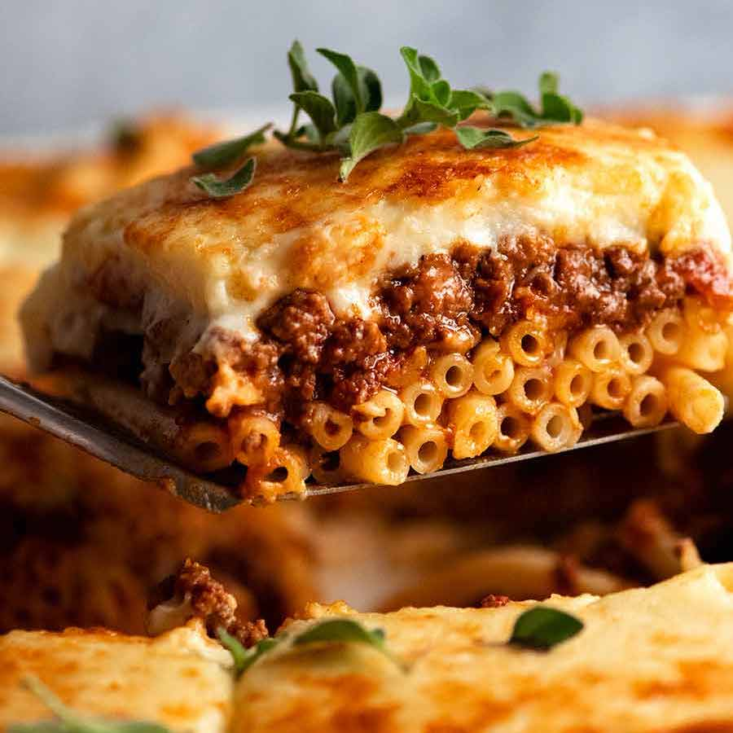

Salmon

Greek Pastitsio
The traditional pastitsio recipe has a deep layer of tubular pasta, a delicious, aromatic beef ragu and is topped off with a thick and velvety béchamel sauce.
This easy to follow Greek pastitsio recipe can be summarised in three simple steps:
- Prepare the Pastitsio pasta
- Prepare the meat sauce
- Prepare the béchamel sauce
Ingredients
Base Ingredients
- 450g/ 15oz. bucatini pasta, penne or ziti
- 110g/ 4oz. feta cheese
- 2 egg whites
Meat sauce
- 900g/ 30oz. lean ground beef
- 2 medium sized red onions (finely chopped)
- 2 cloves of garlic (chopped)
- 400g/ 14oz. canned chopped tomatoes
- 1 tbsp tomato paste
- 1 tsp sugar
- 150ml/ 5 fl.oz. red wine
- 1 bay leaf
- 1 cinnamon stick
- 1 whole clove
- 1/4 of a cup olive oil
- 2 teaspoons sea salt and freshly ground black pepper (to taste)
Bechamel
- 120g/ 4.3 oz. plain flour
- 120g/ 4.3 oz. butter
- 1000ml/ 34 oz. milk
- 2 egg yolks
- 50g/ 1.7oz. Kefalotyri or Parmigiano-Reggiano
- a pinch of nutmeg
- salt to taste
- 50g/ 1.7oz. Kefalotyri or Parmigiano-Reggiano to sprinkle
Steps
- Cook the lasagna noodles in a large pot of boiling water for 10 minutes, or until al dente. Rinse with cold water, and drain.
- In a large saucepan, cook and stir mushrooms, green peppers, onion, and garlic in oil. Stir in pasta sauce and basil; bring to a boil. Reduce heat, and simmer 15 minutes.
- Mix together ricotta, 2 cups mozzarella cheese, and eggs.
- Preheat oven to 350 degrees F (175 degrees C). Spread 1 cup tomato sauce into the bottom of a greased 9x13 inch baking dish. Layer 1/2 each, lasagna noodles, ricotta mix, sauce, and Parmesan cheese. Repeat layering, and top with remaining 2 cups mozzarella cheese.
- Bake, uncovered, for 40 minutes. Let stand 15 minutes before serving.
Back to recipes